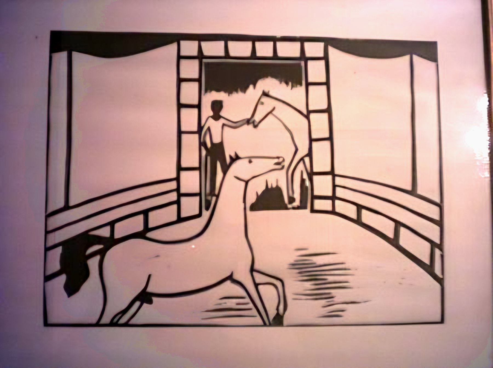

Sfondo rimosso, nitidezza e colore migliorati con strumenti di IA. Nessuna parte dell'opera è stata generata.Background removed, sharpness and colour improved with AI tools. No part of the work was generated.
← Tutte le opereAll works
UR 022
CircoCirco
linoleografia, 1968linocut, 1968
- CatalogoCatalogue
- UR 022
- AnnoYear
- 1968
- TecnicaMedium
- linoleografialinocut
- TipoType
- pittura / incisionepainting / print
- DimensioniDimensions
- da completareto be completed
- CollocazioneLocation
- da completareto be completed
- VisteViews
- 1